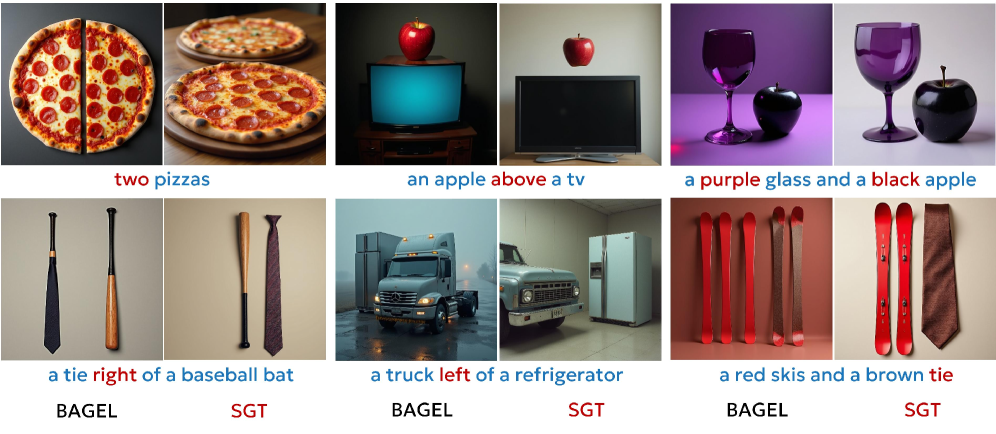
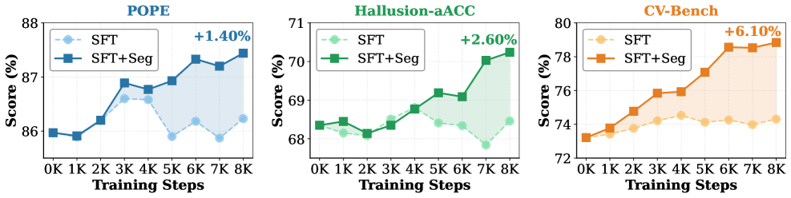

SGT shows that using image segmentation as a generative proxy significantly improves both visual understanding and generation in unified multimodal models, achieving a 6.02% gain on CV-Bench and 90.0% on GenEval.
本文提出语义生成调优（SGT），通过将图像分割作为生成代理任务，有效对齐统一多模态模型中的视觉理解与生成能力。实验表明，SGT在CV-Bench上提升6.02%，在GenEval上达到90.0%，显著优于现有方法。该工作挑战了像素级重建对齐的常见做法，为构建通用多模态系统提供了新思路。
Deep Note — sgt
0) Metadata
- Title: Semantic Generative Tuning for Unified Multimodal Models
- Alias: sgt
- Authors: Songsong Yu, Yuxin Chen, Ying Shan, Yanwei Li
- arXiv ID: 2605.18714
- Published:
- Links:
- Abs: https://arxiv.org/abs/2605.18714
- HTML: https://arxiv.org/html/2605.18714v1
- PDF: https://arxiv.org/pdf/2605.18714
- Tags: unified-multimodal-models, generative-tuning, segmentation-proxy, representation-alignment, visual-understanding-generation
- Domains: system_safety, digital_identity
- Rating: 4/5 (base 1 + quality 2 + observation 1)
1) Why-read
SGT shows that using image segmentation as a generative proxy significantly improves both visual understanding and generation in unified multimodal models, achieving a 6.02% gain on CV-Bench and 90.0% on GenEval.
2) CRGP
C — Context
Unified multimodal models (UMMs) aim to combine visual understanding and generation in a single architecture. Current training paradigms optimize understanding with sparse text signals and generation with dense pixel objectives, leading to misaligned representation spaces that hinder mutual reinforcement.
R — Related work
- Unified Multimodal Models (UMMs) like Emu3, Janus-Pro, Show-o, and Transfusion use next-token prediction or hybrid architectures for interleaved reasoning and generation.
- Representation learning via generative objectives (e.g., SODA, DDAE) uses diffusion models for self-supervised learning, but focuses on pixel-space reconstruction.
- Reconstruction-based alignment methods (ReCA, DIVA, ROSS, GenHancer) rely on exact pixel recovery to enhance performance, but may overemphasize low-level details.
G — Gap
Existing UMM training decouples understanding and generation, leading to misaligned representations. Prior attempts using pixel-level reconstruction as a proxy task overemphasize low-level textures, distracting from semantic understanding and limiting synergy between the two capabilities.
P — Proposal
The paper proposes Semantic Generative Tuning (SGT), which uses image segmentation as a generative proxy to align visual understanding and generation. The key insight is that high-level semantic tasks like segmentation provide structural semantics that enhance both perception and layout fidelity, unlike low-level tasks that focus on texture details.
---
4) Experiments
Main results
SGT achieves a 6.02% performance increase over BAGEL on CV-Bench and attains a 90.0% score on GenEval. It consistently improves both multimodal comprehension and generative fidelity across mainstream benchmarks.
Ablation
Ablation studies show that high-level semantic tasks (segmentation) outperform mid-level (depth estimation) and low-level (pixel reconstruction) proxies, with segmentation providing the best synergy between understanding and generation.
Limitations
['The paper focuses on segmentation as the optimal proxy; other high-level tasks (e.g., object detection) were not exhaustively compared.', 'The approach may require additional segmentation annotations or pre-trained segmentation models, which could limit applicability in data-scarce scenarios.', 'Mechanistic analysis (feature separability, attention patterns) is qualitative; quantitative metrics for these insights are not provided.']
5) Why it matters
- SGT provides a principled way to align understanding and generation in UMMs, which is directly relevant to building general-purpose multimodal systems.
- The finding that high-level semantic tasks outperform low-level reconstruction challenges the common practice of pixel-level alignment.
- The mechanistic analysis (feature linear separability, attention allocation) offers insights into how generative tuning improves representation quality.
6) Next steps
- [ ] Evaluate SGT on additional UMM architectures (e.g., Emu3, Janus-Pro) to verify generality.
- [ ] Explore other high-level semantic tasks (e.g., object detection, scene graph generation) as generative proxies.
- [ ] Investigate the impact of SGT on downstream tasks like interleaved image-text generation and in-context editing.
- [ ] Develop a theoretical framework to explain why segmentation provides optimal alignment.
7) Scoring
4/5 = base 1 + quality 2 + observation 1
语义生成调优：面向统一多模态模型的生成式对齐方法
主要结论 - SGT利用图像分割作为生成代理，统一了多模态模型的理解与生成表征空间。 - 高层语义任务（分割）优于中层（深度估计）和低层（像素重建）代理，带来最佳协同效果。 - 在CV-Bench和GenEval上分别取得6.02%和90.0%的领先性能。 - 机制分析表明，分割代理提升了特征的线性可分性和注意力分配质量。
1) 阅读理由
SGT证明使用图像分割作为生成代理可显著提升统一多模态模型的视觉理解与生成能力，在CV-Bench上获得6.02%的提升，GenEval上达到90.0%。
2) CRGP（背景 / 相关工作 / 差距 / 方案）
上下文：统一多模态模型（UMMs）旨在单一架构中结合视觉理解与生成，但当前训练范式分别使用稀疏文本信号和密集像素目标进行优化，导致表征空间错位，阻碍两者相互促进。相关工作：现有UMMs（如Emu3、Janus-Pro、Show-o、Transfusion）采用下一token预测或混合架构；基于生成目标的表征学习（如SODA、DDAE）关注像素空间重建；基于重建的对齐方法（ReCA、DIVA、ROSS、GenHancer）依赖精确像素恢复，可能过度强调低层细节。差距：现有UMM训练将理解与生成解耦，导致表征错位；像素级重建作为代理任务过度关注低层纹理，分散语义理解，限制两者协同。提案：本文提出语义生成调优（SGT），使用图像分割作为生成代理对齐视觉理解与生成，其关键洞察是高层语义任务（如分割）提供结构语义，增强感知与布局保真度，不同于低层任务聚焦纹理细节。
3) 实验
SGT在CV-Bench上相比BAGEL提升6.02%，在GenEval上达到90.0%，在主流基准上持续提升多模态理解与生成保真度。
消融实验
消融实验表明，高层语义任务（分割）优于中层（深度估计）和低层（像素重建）代理，分割在理解与生成之间提供最佳协同效果。
局限性
['论文聚焦于分割作为最优代理，未穷尽比较其他高层任务（如目标检测）。', '该方法可能需要额外的分割标注或预训练分割模型，在数据稀缺场景下可能受限。', '机制分析（特征可分性、注意力模式）为定性分析，未提供定量指标。']
4) 重要性
- SGT为UMMs中理解与生成的对齐提供了原则性方法，直接服务于通用多模态系统的构建。
- 高层语义任务优于低层重建的发现挑战了像素级对齐的常见实践。
- 机制分析（特征线性可分性、注意力分配）揭示了生成调优如何提升表征质量。
5) 下一步
- [ ] 在更多UMM架构（如Emu3、Janus-Pro）上评估SGT以验证通用性。
- [ ] 探索其他高层语义任务（如目标检测、场景图生成）作为生成代理。
- [ ] 研究SGT对下游任务（如交错图文生成、上下文编辑）的影响。
- [ ] 发展理论框架解释分割为何提供最优对齐。
![Figure 13 : Token-level attention distribution during image generation. We visualize the attention weights allocated to each token in the prompt
“ A photo of a tie right of a baseball bat ” for both the baseline
BAGEL model and our segmentation-enhanced variant.
The segmentation guidance consistently amplifies attention to semantically
salient tokens ( tie : 4.70 % → 7.45 % 4.70\%{\to}7.45\% , right : 9.59 % → 12.64 % 9.59\%{\to}12.64\% ), leading to improved
spatial reasoning and object placement as shown in the generated samples (left).](figures/1093/fig_017.png)

